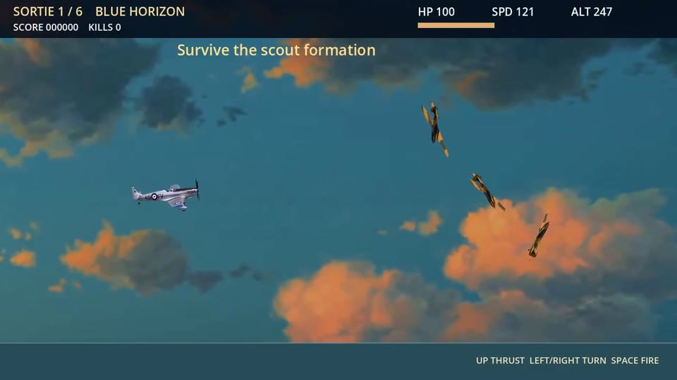
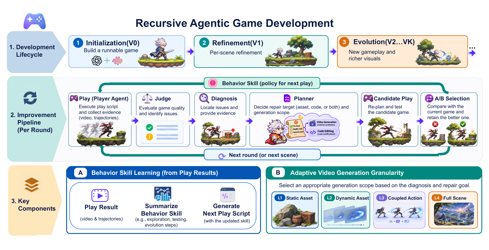

Generate the world
Video models create visual materials and motion; code turns them into an interactive game.
Video generation × agentic game development
Generated visuals and motion meet programmable gameplay.
Play2Evolve combines video generation models with code to build interactive games. Agents playtest and jointly revise both to improve functionality, aesthetics, and gameplay.

Inside the gamesGenerated worlds.Real gameplay from agent-built games
Project video
TL;DR
Play2Evolve brings video generation and game code into one development loop. Agents play the game, diagnose what needs to change, and revise its visuals and gameplay together.
Video models create visual materials and motion; code turns them into an interactive game.
Player, Judge, and Designer agents use gameplay evidence to guide repairs and new goals.
Each iteration coordinates changes to generated materials and game logic, then playtests the result.
Reported resultOverall GameCraft-Bench score improves from 50.81 to 60.05, from initialization to evolution.
See the evaluationVideo-generated materials in playable games
Video models create the visual materials. Game code brings them into interactive play. Explore real recordings across genres.
Aerial combat in a moving sky.
Combat, counterplay, and a knockout.
A coordinated two-character interaction.
Recruit, equip, and complete a quest.
Grow a defense through successive waves.
Build defenses and hold back the waves.
Selected excerpts illustrate different games and development stages. They are not all final evolved checkpoints.
Watch the development process
Inspect initialization, refinement, and evolution side by side. Choose a game below, then play all three checkpoints.
Tower Defense · combat scene
Create the runnable game.
Repair functional and visual defects.
Develop gameplay and aesthetics.
These clips show the same gameplay setting at different checkpoints. Actions and progress differ across versions. Playback starts together; actions and game states are not synchronized. Use equal playback speeds for the closest temporal comparison.
Repeated evolution
These selected clips follow Plant Defense across successive versions, showing how new play goals and generated materials accumulate over time.
The clips are selected demonstrations from successive saved versions. They preserve the game and route labels, but are not frame-matched A/B tests.
Video generation meets game code
The planner chooses what the video model should generate and how code should integrate it into the game.
Video generation model
Generate still images, character animations, coupled actions, or environmental motion. Revise prompts, visual references, and generation scope when playtests reveal a material problem.
Game code
Place and animate materials in the scene, trigger clips from game events, and manage collision, progression, and outcomes. Update playback and gameplay logic when materials change.
One feedback loop updates both. For example, upgrading a still character to an animation also requires code to handle its frames, placement, and response to player input.
Wildhaven: a still sawmill and its generated processing animation. This is an asset preview, not a gameplay replay.
A still sprite or background when internal motion is unnecessary.
Animate an actor or prop while code controls its position and state.
Generate interacting subjects together when contact and timing must agree.
Generate environmental motion while code controls interaction and outcomes.
The complete pipeline
From initialization through refinement and evolution, agents coordinate material generation and code editing using playtest feedback.

Initialization
A builder turns the public specification into a runnable project, video-generated materials, and replayable traces.
Refinement
Agent-authored play programs expose defects. Diagnosis guides coordinated code and material changes, followed by candidate comparison.
Evolution
A designer proposes gameplay and aesthetic goals. The builder implements them, and further playtests guide repairs and selection.
Behavior Skills summarize earlier play into game-local guidance for the next play program. They update the player’s context, helping later exploration use what earlier playtests learned.
Play2Evolve combines video generation models with code in a recursive framework for agentic game development. Video models generate appearance and motion, while code composes the materials into interactive scenes and implements gameplay. Initialization creates a runnable game. Refinement uses playtest evidence to diagnose and repair defects in both materials and code. Evolution proposes new gameplay and aesthetic goals, implements an upgrade, and evaluates it through further play. Adaptive material generation supports still images, individual animations, coupled interactions, and scene motion. Code maintains interactive control throughout development.
Evaluation
Benchmark evaluation and human ratings examine complementary aspects of the resulting games.
GameCraft-Bench score
From initialization to evolution
GameCraft-Bench score
| Method / checkpoint | Mechanics | Depth | Functional visuals | Art | Overall |
|---|---|---|---|---|---|
| Initialization V0 | 68.70 | 48.83 | 51.63 | 44.76 | 50.81 |
| Play2Code | 69.84 | 50.07 | 51.95 | 51.77 | 52.46 |
| Refinement V1 | 72.97 | 52.38 | 52.50 | 49.35 | 54.45 |
| Evolution V2 | 78.02 | 56.39 | 57.51 | 57.03 | 60.05 |
Values are transcribed from the current manuscript. The selected videos above illustrate the method and do not define the benchmark cohort.